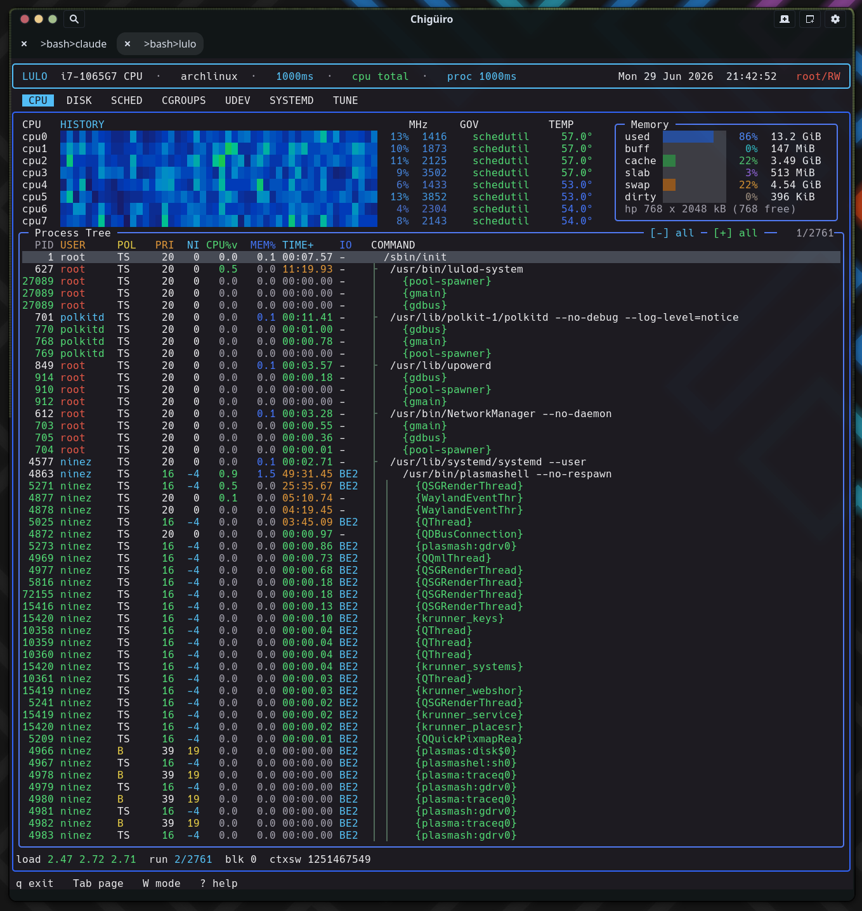

The CPU page is Lulo’s main runtime observability surface: a per-core CPU history heatmap above a live /proc-derived process tree, both sampled on the frontend thread but on deliberately decoupled cadences so the tree can refresh slowly while the heatmap stays smooth.
The CPU page combines machine-level CPU monitoring with a process-centric inspection tree. It is the one heavy page whose data is gathered directly on the frontend thread rather than in a daemon, which makes its sampling design the most interesting part of the frontend.
| Region | Source | What it shows |
|---|---|---|
| CPU heatmap | /proc/stat (lulo_read_cpu_stat) |
Per-core load history as a scrolling color band |
| CPU metadata | /sys/.../cpufreq, hwmon / thermal |
Current MHz, governor, and per-core temperature |
| Memory widget | /proc/meminfo |
Used / buff / cache / slab / swap / dirty / hugepages |
| Process tree | /proc/[pid] + /proc/[pid]/task |
Parent/child process and thread tree with scheduler state |
The frontend (src/app/lulo.c) does not run one flat event loop. It runs an outer sampling loop wrapped around an inner event loop, and the split is what keeps the UI live while bounding how often expensive work runs.
The outer loop fires every sample_ms (default 1000ms, adjustable with + / -). On each tick it polls all six daemon backends, gathers per-page data, and does a full page render. It then enters the inner loop with a deadline of now + sample_ms. The inner loop waits on input but the wait is clamped to at most 100ms, so even with nothing happening the UI wakes ten times a second to repaint live data and re-check the terminal size. When the deadline expires, control breaks back to the outer loop for the next sample.
The heatmap is the band of colored cells at the top of the page: one column per sample, one row per CPU, scrolling right to left.
Each sample reads /proc/stat into a CpuTick (user / nice / sys / idle / iowait / irq / softirq / steal) for the aggregate cpu line and every cpuN. Two different percentages are derived on purpose:
| Quantity | Formula | Used for |
|---|---|---|
| Busy % | (Δtotal − Δ(idle+iowait)) / Δtotal |
The numeric NN% column (treats iowait as idle) |
| Heat % | Δ(user+nice+sys+irq+softirq+steal) / Δtotal |
The heatmap color (excludes iowait from “work”) |
Heat values feed a 128-slot per-core ring (timeline), appended with a shift-left memmove so the newest sample is always at the right edge. Even when you are on another page, the loop keeps appending heat samples, so the history graph is already populated the moment you tab back to CPU. Each cell is drawn as a full block colored through a 10-stop interpolated gradient (blue → cyan → green → yellow → orange → red); zero-load cells are left as background so idle cores read as empty rather than dark-blue.
CPU metadata is gathered only while the CPU page is active, to avoid paying for /sys reads you cannot see.
cpufreq/scaling_cur_freq (plus min/max, governor, and driver).coretemp/tempN_input, falling back to a thermal_zone* whose type matches x86_pkg/pkg. Logical CPUs are mapped to a physical-core reading via threads_per_core, so SMT siblings share one temperature.The governor and temperature columns are responsive: the governor appears only when the CPU panel is at least 50 columns wide, the temperature only at 58+. Temperature is color-graded (≥75 red, ≥65 orange, ≥55 green, else blue).
The lower half of the page is a live process and thread tree built fresh from /proc on each proc-cadence tick.
gather_processes iterates /proc/[pid], parsing /proc/PID/stat (carefully handling the parenthesized comm field) for ppid, utime/stime, priority, nice, thread count, RSS, RT priority, and scheduling policy. Command labels join /proc/PID/cmdline (NULs become spaces), falling back to [comm] for kernel threads. I/O priority is read with the ioprio_get syscall. UID→name lookups go through a small FIFO cache. Threads are only expanded (shown as {comm} rows) for processes that actually have more than one thread.
The tree itself is built in an arena, not with heap-linked nodes: nodes are sorted by (pid, is_thread), a separate sorted array of process leaders is built, and each node bsearches its parent (threads parent to their tgid, processes to their parent_pid) and links through first_child / next_sibling index pointers. That is an O(n log n) build over flat arrays with no per-node allocation.
| Field | Meaning |
|---|---|
| PID | Process id (threads target the tgid for actions) |
| user | Owning user (root rendered red) |
| policy | Scheduling policy (TS, FF, RR, B, IDL, DLN, EXT) |
| priority / nice | Current scheduling priority |
| CPU | CPU usage in the active percentage mode |
| memory | Resident memory |
| time | Accumulated CPU time (switches to HhMMm past 100 minutes) |
| I/O | Linux I/O priority (RT > best-effort > idle) |
| command | Full command line, horizontally pannable |
Long command lines can be panned left/right (arrow keys, 4 columns per step) while the tree prefix stays fixed, so deep argument lists stay inspectable without breaking the tree shape. Selection is keyed by (pid, is_thread) rather than row index, so after each rebuild the cursor re-locates the same process instead of jumping when the tree reorders. Sibling sort follows the active column (default CPU descending, with CPU → MEM → TIME → PID tie-breaks); clicking a column header toggles its sort.

The p key toggles how the process CPU% column is normalized. This affects the process column only — the per-core heatmap is unchanged.
| Mode | Meaning |
|---|---|
total |
Default; percent of total machine CPU capacity |
per-core |
htop-style; a process pegging one core reads ~100% |
Internally the column is Δticks × scale × 1000 / cpu_total_delta, where scale is 1.0 in total mode and logical_cpus in per-core mode. Because the process tree can refresh more slowly than the CPU samples, the denominator is the accumulated total-jiffy delta across every CPU sample since the last proc gather — so process CPU% stays correct even when the tree refreshes every 5s while CPU samples every 1s. Switching modes invalidates the cached snapshot and forces an immediate resnapshot.
The page is deliberately conservative about privileged inspection, but it does expose direct control over the selected process.
| Action | Key | Effect |
|---|---|---|
| Signal (terminate) | x |
SIGTERM (targets the tgid for thread rows) |
| Signal (kill) | X |
SIGKILL |
| Trace | s |
Start/stop an strace session on the selected process |
| Collapse / expand all | c / e |
Fold the tree to process leaders, or expand fully |
| Refresh cadence | r |
Cycle the proc refresh interval (1 / 2 / 3 / 5s) |
Tracing requires RW mode (see Process Model & IPC) and refuses kernel threads. When active, the process panel is replaced by a live trace view that tails the most recent output (last 256 KiB) with vertical and horizontal scroll, auto-refreshing on the 100ms idle tick.
Cursor movement does not redraw the whole table. The frontend keeps three repaint tiers and picks the cheapest one each time:
| Tier | Redraws | When |
|---|---|---|
| Full | Entire process panel | New snapshot or layout change |
| Body-only | Rows + count | Scroll position changed |
| Cursor-only | Just the old and new selected rows | Selection moved without scrolling |
Scrolling has streak-based acceleration (consecutive same-direction moves within 120ms step by 2, then 3 units), while mouse-wheel steps stay at 1 unit. Heavy pages elsewhere only repaint when their daemon’s snapshot generation advances or a status field changes, so idle daemons cost zero frames.